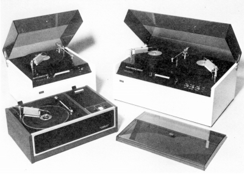
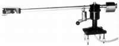
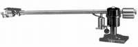
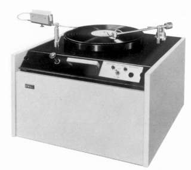

KEITH MONKS（キースモンクス）
大げさだが効果抜群のレコードクリーナーで知られるイギリスのブランド。アームも扱っていた。現在ではマイクスタンドなどが輸入されている。
代理店は1975年頃はオーディオニックス、1977年頃以降は東志。

�T.アーム

(M9BA Mk�U)
(Laboratory MK3)
�W.その他
機械式のレコードクリーナーの元祖的なメーカーであった。

（ＭＫ2）2.その他